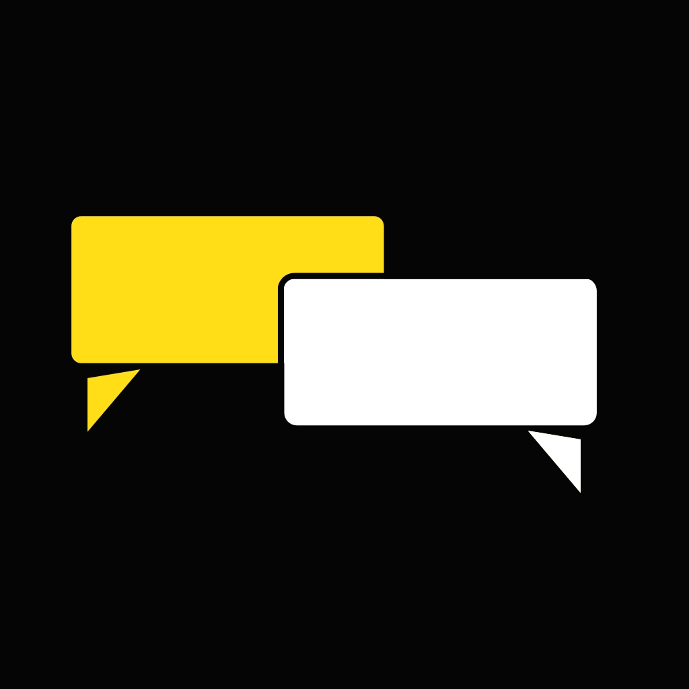

Welcome toAkoli Speech
Helping people with non-standard speech communicate — with speech recognition that learns to understand your voice.
Akoli Speech helps people with non-standard speech to create and use their own ASR (Automatic Speech Recognition) model — one tuned to their individual speech patterns.
Users record a set of speech samples, and the app learns from them to build a model tuned to you. From then on, it can caption and transcribe what you say.
The app builds on research from Google's Project Euphonia.
Akoli Speech is developed at the Center for Digital Language Inclusion (CDLI) at the Global Disability Innovation Hub (GDI Hub), in collaboration with Talking Tips Africa and Senses Hub.
Development has been supported by the FCDO AT2030 and Google.org.
Launching soon.Check back here for updates.